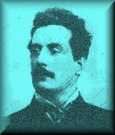

List of Puccini's Operas
Giacomo Puccini was born on December 22, 1858, to a family of church musicians in Lucca. He first studied with his uncle at the Instituto Pacini in Lucca, but a performance of Verdi's "Aida" brought forth a love for operatic composition. Puccini attended the Milan Conservatory and studied under Bazzini and Ponchielli. His first opera, "Le Villi," was written in 1884, at the age of 26.
The opera "Edgar," written in 1893, was a failure, but "Manon Lescaut" proved to be an international success. More successes followed, including three of the most popular operas in history: "La Bohème" (1896), "Tosca" (1900), and the incomparable "Madama Butterfly," written in 1904. For each opera, Puccini collaborated with the librettists Illica and Giacosa. The successful team broke up with Giacosa's death in 1906.
Domestic tragedies plagued the rest of Puccini's life. His next opera, "The West," did not appear until 1910. Although containing many musical and stylistic innovations, this opera has never received the popular acclaim of his earlier work.
Puccini's final opera, "Turandot," produced in 1926, is a grand and ambitious piece. Sadly, the work was unfinished and the final act had to be written by Franco Alfano. The conductor, Leopold Stokowski, later refused to conduct the final act; instead, he told the audience, "and here the composer laid down his pen." Stokowski then left the stage.
Puccini died on November 29, 1924 in Brussels at the age of 65.
Designed by: Michael Cantone